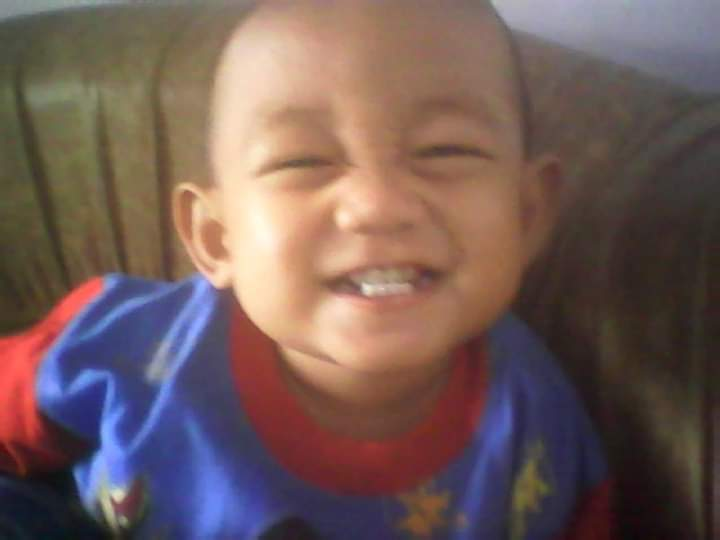

Tech
Coding & Web Development
Suka mengulik HTML, CSS, dan JavaScript untuk membuat tampilan website interaktif serta eksperimen game sederhana di waktu luang.
Selamat datang di halaman perkenalan diri saya! Saya seorang Pelajar yang menyukai dunia teknologi, suka sound, olahraga, dan beragam kegiatan positif di sekolah.

Saya adalah seorang Pelajar di Pondok Tahfidz Modern Al-Imam yang berfokus menghafal Al-Qur'an sekaligus mendalami ilmu keagamaan. Kehidupan pesantren modern membentuk pribadi saya yang berpegang teguh pada nilai-nilai Islami, namun tetap terbuka dan adaptif terhadap perkembangan zaman.
Di luar aktivitas rutin hafalan, saya memiliki ketertarikan besar pada dunia teknologi, seni, dan media digital. Saya aktif mendalami audio engineering dan seni hadroh untuk menghasilkan olah suara yang berkualitas, sekaligus menyalurkan hobi sebagai streamer dan mengeksplorasi inovasi teknologi terbaru demi menciptakan karya yang bermanfaat.
Pengaturan mixer audio, equalizer, sound setup & mastering suara.
Live streaming, pembuatan konten video & interaksi multi-platform.
Penguasaan ritme pukulan rebana, keprak, bas & lantunan shalawat.
Pemrosesan logika backend & server MySQL.
Manajemen versi kode & kolaborasi tim.
Tampilan optimal di HP, Tablet, & Desktop.
Suka mengulik HTML, CSS, dan JavaScript untuk membuat tampilan website interaktif serta eksperimen game sederhana di waktu luang.
Rutin berolahraga bersama teman-teman sekolah saat akhir pekan untuk menjaga kesehatan tubuh dan menjalin keakraban.
Bermain game berbasis strategi untuk melatih kemampuan berpikir cepat, koordinasi komunikasi, dan penyusunan taktik tim.
Aktif dalam kegiatan seni musik islami (hadroh/rebana), melatih irama pukulan, tempo lagu, serta melantunkan sholawat bersama tim.
Memiliki ketertarikan tinggi pada tata suara (sound system), merakit equalizer, mixer audio, serta mengeset speaker agar menghasilkan suara yang jernih.
Aktif dalam kegiatan ekstrakurikuler sekolah untuk menambah pengalaman leadership, public speaking, serta kerjasama antar siswa.
Saya selalu terbuka untuk berdiskusi mengenai ide baru, kerjasama pembuatan website, atau sekadar menyapa!
haikal@gmail.com
+62 812 3456 7890
Indonesia